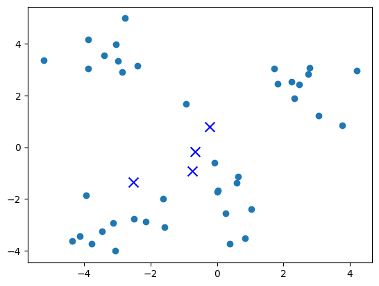
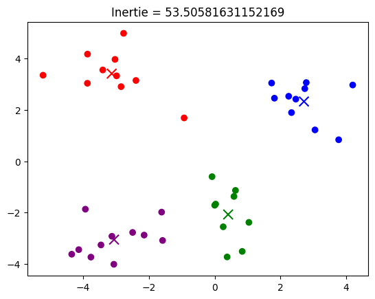
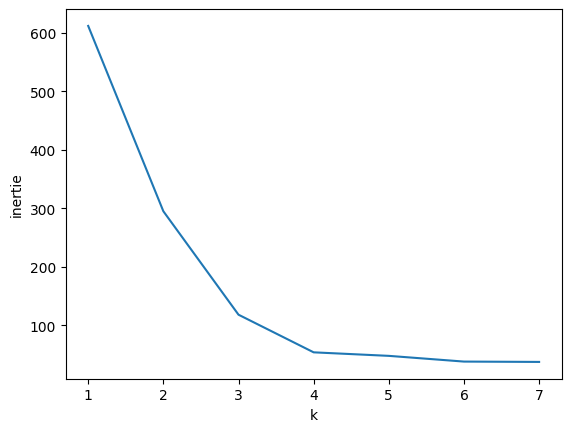

Algorithme des k-moyennes
Contents
Algorithme des k-moyennes#
Visualisation de l’algorithme des k-moyennes
Génération des données#
On génère des points aléatoirement, ainsi que k = 4 centres initialement aléatoires :
import numpy as np
import matplotlib.pyplot as plt
from matplotlib.colors import ListedColormap
k, dim = 4, 2
X = np.vstack([np.array(p + np.random.randn(10, dim)) for p in [[3, 2], [0, -2], [-3, 3], [-3, -3]]]).tolist()
centres = (np.random.rand(k, dim)*6 - 3).tolist()
plt.scatter([x[0] for x in X], [x[1] for x in X])
plt.scatter([x[0] for x in centres], [x[1] for x in centres], marker='x', s=100, c='b')
plt.show()

Code#
def centre(X):
c = [0.]*dim
for x in X:
for i in range(len(x)):
c[i] += x[i]
if len(X) == 0: return c
for i in range(len(c)):
c[i] /= len(X)
return c
def calculer_centres(classes):
centres = []
for i in range(len(classes)):
centres.append(centre(classes[i]))
return centres
def d(x, y):
s = 0.
for i in range(len(x)):
s += (x[i] - y[i])**2
return s**.5
def plus_proche(x, centres):
imin = 0
for i in range(len(centres)):
if d(x, centres[i]) < d(x, centres[imin]):
imin = i
return imin
def calculer_classes(X, centres):
classes = [[] for i in range(len(centres))]
for x in X:
classes[plus_proche(x, centres)].append(x)
return classes
def kmeans(X, centres):
centres2 = None
while centres != centres2:
centres2 = centres
classes = calculer_classes(X, centres2)
centres = calculer_centres(classes)
return classes
def inertia(classes, centres):
s = 0.
for i in range(len(centres)):
for x in classes[i]:
s += d(x, centres[i])**2
return s
Test#
classes = kmeans(X, centres) # test de kmeans
cmap = ListedColormap(['r', 'g', 'b', 'purple'])
centres = calculer_centres(classes)
plt.scatter([x[0] for x in X], [x[1] for x in X], c=[plus_proche(x, centres) for x in X], cmap=cmap)
plt.scatter([x[0] for x in centres], [x[1] for x in centres], marker='x', s=100, c=range(k), cmap=cmap)
plt.title("Inertie = " + str(inertia(classes, centres)))
plt.show()

elbow method#
kmax = 7
inertie = []
for k in range(1, kmax+1):
centres = (np.random.rand(k, dim)*6 - 3).tolist()
classes = kmeans(X, centres)
centres = calculer_centres(classes)
inertie.append(inertia(classes, centres))
plt.plot(range(1, kmax+1), inertie)
plt.xlabel("k")
plt.ylabel("inertie")
plt.show()

Animation#
from pathlib import Path
from scipy.spatial import Voronoi, voronoi_plot_2d
p = 3
X = np.vstack([np.array(p + np.random.randn(10, 2)) for p in [[3, 2], [0, -2], [-3, 3]]])
centres, new_centres, classes = np.random.rand(3, 2)*6 - 3, None, None
def scatter(X, **kwargs): plt.scatter(X[:,0], X[:,1], cmap=ListedColormap(['r', 'g', 'b']), **kwargs)
def save(title):
global p
scatter(centres, marker='x', s=100, c=[0, 1, 2])
scatter(X, c=classes)
plt.title(title)
plt.savefig(f'img/kmean_{p}.png')
p += 1
def d(a, b): return np.sum((a-b)**2)
for f in Path('img').glob('*.png'): f.unlink()
scatter(X)
plt.title("Données que l'on souhaite classifier")
plt.savefig(f'img/kmean_1.png')
scatter(centres, marker='x', s=100, c=[0, 1, 2])
plt.title("Choix initial des centres")
plt.savefig(f'img/kmean_2.png')
while True:
classes = np.array([np.argmin([d(x, c) for c in centres]) for x in X])
plt.clf()
save("Association de chaque donnée au centre le plus proche")
new_centres = np.array([X[classes==i].mean(axis=0) for i in range(3)])
if np.allclose(centres, new_centres): break
centres = new_centres
plt.clf()
save("Mise à jour des centres")
ax = plt.gca()
x, y = ax.get_xlim(), ax.get_ylim()
vor = Voronoi(centres)
voronoi_plot_2d(vor, ax, show_points=False, show_vertices=False)
ax.set_xlim(x)
ax.set_ylim(y)
save("Frontière de décision")
Compression d’image#
from sklearn.cluster import KMeans
import matplotlib.pyplot as plt
import numpy as np
img = plt.imread('compression/parrot.jpg')
plt.imshow(img)
plt.show()

pixels = img.reshape(-1, 3)
print(f"pixels contient {len(pixels)} pixels de 3 couleurs chacun")
kmeans = KMeans(n_clusters=8, random_state=0).fit(pixels)
print(f"Centres des 8 clusters de pixels : {kmeans.cluster_centers_}")
print(f"kmeans.labels_ contient les classes de chaque pixel : {kmeans.labels_}")
img_compressed = kmeans.cluster_centers_[kmeans.labels_].astype('uint8')
print(f"img_compressed est obtenu à partir de pixels en remplaçant chaque pixel par le centre de son cluster")
img_compressed = img_compressed.reshape(img.shape)
plt.axis('off')
plt.imshow(img_compressed)
plt.show()
plt.imsave('compression/parrot_compressed.png', img_compressed)
pixels contient 496738 pixels de 3 couleurs chacun
Centres des 8 clusters de pixels : [[ 7.66165195 19.76974168 10.35961169]
[164.1427278 177.25148203 142.0176766 ]
[107.72793283 127.07565615 47.67371984]
[207.45478823 170.16388681 32.67841079]
[ 9.0873963 41.5624455 135.5594808 ]
[195.67637004 24.02326738 14.00799751]
[223.28612846 234.53746655 225.07193832]
[ 13.17134015 99.70298247 39.31646374]]
kmeans.labels_ contient les classes de chaque pixel : [0 0 0 ... 6 6 6]
img_compressed est obtenu à partir de pixels en remplaçant chaque pixel par le centre de son cluster
Exemple de problème non linéairement séparable#
import numpy as np
import matplotlib.pyplot as plt
theta = np.random.rand(100)*2*np.pi
r1 = 10
r2 = 5 + np.random.rand(100)
for k in [5, 10]:
r = k + np.random.rand(100)
theta = np.random.rand(100)*2*np.pi
plt.scatter(r*np.cos(theta), r*np.sin(theta))